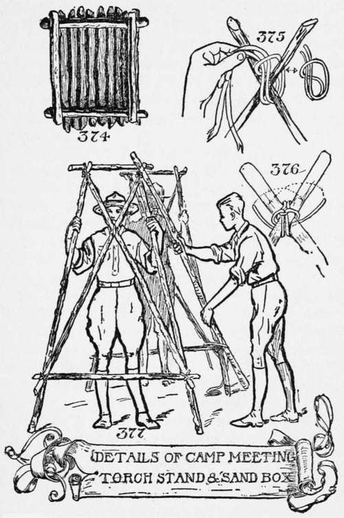

Council Fire Ceremonies
Description
This section is from the book "The Book Of Camp-Lore And Woodcraft", by Dan Beard. Also available from Amazon: The Book of Camp-Lore and Woodcraft.
Council Fire Ceremonies
On entering the council grounds always enter from the east, salute Too-le-ze, the white wolf, then go across the Ghost Walk with the sun to the West Court, and salute Kor-le, the bear; about face and march back to the South Court and salute Too-winks, the badger; then about face and march up and salute He-le-jah, the panther; remain standing at salute until He-le-jah who is the commanding officer, gives you permission to retire, or gives you orders what to do; then go back, always moving along these walks like a soldier, to your seat.
On Sundays the council ground is a splendid place for holding religious services. On such occasions the minister sits in the Court of Knowledge, the North Court on the right-hand side of the presiding officer, and the two torches in the daytime are replaced by flags or banners. The one on the right-hand side of the presiding officer must be Old Glory, the one on the left the flag of the school, the troop or the club to which the council fire belongs.
The center of the council fire may be occupied by a "Liberty Pole," which is the good old American name for the flag pole, from which Old Glory flies. Never forget to respect the colors and greet them with the greatest ceremonial deference, for those colors possess a magic quality; they represent to you everything that is grand, noble and inspiring, and if you have any other kind of thoughts, this country is no place for you. Remember that the council fire is American, and we are proud to be called Americans.
The walk, or path from the east to the west is the Ghost Walk, or the Spirit's Walk; it is the path which Indians believe the spirit takes after leaving the body, an idea which was consciously or unconsciously adopted by our brave boys during the recent war and it explains what they meant when, with bowed heads, they reported that their bunky, pal or friend had "gone West."
The Western Court has the totem animal of the black bear; the color of the court, however, is not black but blue, blue from the blue Pacific; the totem object is a blue mountain.
The walk from the south to the north is the Path of Knowledge; anyone traveling that trail is seeking further knowledge of the benefits of woodcraft, nature and the big outdoors; the totem animal of the North Court is the American panther, cougar or mountain lion; the color of the North Court is yellow or black, the latter representing the long arctic night.
The Southern Court has the badger for its totem animal, and the red mountain for the totem object; red is its totem color.
Thus we have white for the totem color of the east, meaning light, peace and purity; red for the south, meaning violence, disturbance, auction, danger, revolution, love and life. This color is both stimulating and disturbing to man, animal and plant.
Perhaps when we read of the turmoil that is constantly disturbing our southern border, we may think that the Indians had a knowledge of the real meaning of red when they made the totem of the south a red mountain. Red is the ruling color, the king of color, the dominant color, the strong color, and symbolizes the blossoming of plants and is the color of berries and fruit. Red tints the spring leaves and stains the fall leaf. In the spring the thickets and tree trunks are tinged with red; they are blushing, so to speak, as Ruskin says, "in order to show the waiting of love." Red is emphatically a masculine color, a MAN's COLOR.
Blue is a feminine color; it stands for sentimental affections, blue light has a depressing effect and creates nervousness.
Black is the ogre among colors; it devours every other color; sometimes the North Court is black; black stands for
Continue to: